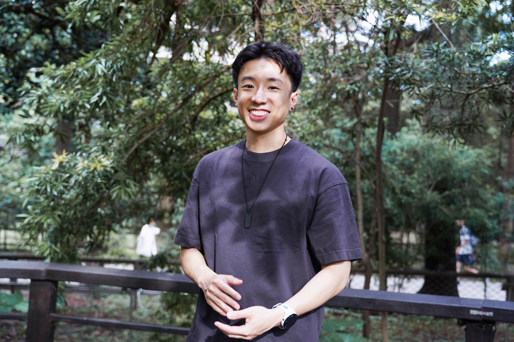

現在
自由接案工程師
承接軟體開發專案，負責需求溝通、進度安排與開發工作。

自由接案工程師 · 應徵咖啡廳兼職
我是一個細心、主動、盡責的人。做事會留意細節，熟悉工作後能自己掌握節奏，不需要反覆提醒。交給我的事情會認真完成，也重視和夥伴之間的溝通與配合。
目前從事軟體開發接案，希望利用專案之餘的時間兼職，增加穩定收入。認識的同事也在這裡工作，是我想加入的原因之一。平時喜歡閱讀小說，也期待有機會在書店的環境工作。
承接軟體開發專案，負責需求溝通、進度安排與開發工作。
曾任軟體工程師，具備問題分析、軟體開發與團隊合作經驗。
大學期間擔任音響社社長，舉辦超過一百場活動，累積活動執行與人員溝通協調經驗。
能以英文進行日常對話。